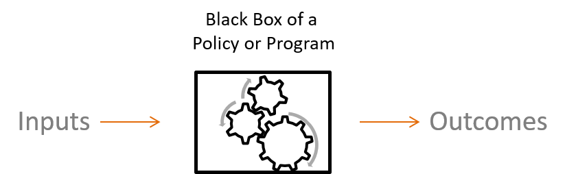
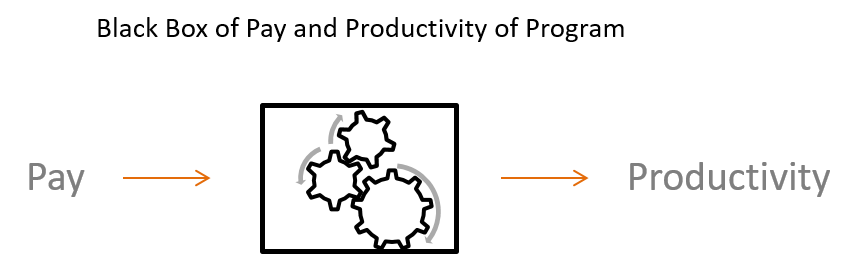

Chapter 2 Program Impact
2.0.1 Why do we use statistical models for program evaluation?
In unit 1 we introduced the general purpose of statistics and quantitative methods
In unit 2 we will provide a more formal definition of how statistics is used and what it can tell us about a program
2.0.2 Reminder from Unit 1: Advantages of Statistical Evaluation
- Statistical models can be used with to analyze data that will show the quality, program impact, and where the impact occurs.
- Quantitative and statistical analysis can attempt to give an unbiased evaluation. It can provide us with outcomes associated with probabilities, level of confidence, and the size of the effect. It can also provide information about the specific relationship between the program, the effect, and the impact.
- Variables can be used to represent the program and its effect.
2.1 The Regression Equation
In unit 1 we saw that the regression line is represented by a linear equation (Eq. 1.1). We also saw regression coefficients, often represented by the upper case Greek letter Beta, show the slope of the regression line. In this case the slope is Beta with a subscript of 1. Here we only have up to \(B_{1}\). This means that there is only one independent variable. Over next few weeks we will begin to see that we can have more than on independent variable represented by \(B_{1}, B_{2}, B_{3},...B_{i}\).
(Eq. 2.1) Regression Equation: \(Y = B_{0} + B_{1}X_{1}\)
The Beta with a subscript 0, (\(B_{0}\)), shows the intercept or where the regression line crosses the horizontal axis, Eq 2.1. How can we interpret this? If the value of \(x_1\) is 0 for a data point then \(B_{1}\) is multiplied by 0, which would make \(B_{1}X_1 = B_{1}0 = 0\) Because it is equal to zero all that remains is Eq 2.2.
(Eq. 2.1) Regression Equation: \(Y = B_{0} + B_{1}X_{1}\)
(Eq. 2.2) Intercept of Regression Equation: \(Y = B_{0}\)
2.1.1 Hypothetical Example of Interpreting the Regression Equation
A manager may want to increase productivity of the employees by implementing a new or altered program in the organization. There may be many ways that this could happen, such as better technologies, implementing work teams, or creating a better work environment. The manager proposes a simple solution: increase pay. Therefore, the manager believes that employees will be more productive with more pay.
The manager implements the pay raise and the employees are very satisfied with the increased income. Everything seems to be going well, but how does the manager know if the increased pay was associated with increased productivity. In other words: did the program work? The manager decided to simply compare raw productivity data would not lead to enough confidence that it was successful. The solution is using statistical methods for evaluation.
Recall that program evaluation can be interpreted as a blackbox model (Fig. 2.1) with inputs and outcomes.
(Fig. 2.1) 
In this case there are inputs of pay raise and outcomes of productivity levels.
(Fig. 2.2) 
Because the manager has inputs (pay raise) and outputs (productivity) the manager can use these to run a regression analysis.
(Eq. 2.3) Regression Eq: \(Productivity = B_{0} + B_{1}Pay Raise\)
The manager ran the regression analyis and the results show that \(B_{0} = 50\) units of productivity and that \(B_{1} = 5\).
(Eq. 2.4) Regression Eq: \(Productivity = 50 + 5Pay Raise\)
How should the manager interpent these results? Because \(B_{0}\) is 50 it means that this is the expected productivity if there was no pay raise. Because \(B_{1}\) is 5 it means that for each unit or dollar of a pay raise you would expect productivity to increase by 5 units.
(Eq. 2.4) Regression Eq: \(Productivity = 50 + 5Pay Raise\)
2.2 Confidence Intervals
How can we be confident of our estimate of program impact?
From the example we saw that for each dollar we expect to see an increase of 5 units of productivity. Does this mean that for every employee each dollar of pay raise translates into 5 unit of productivity? That would mean we would be perfectly confident that the regression equation describes each employee perfectly. Therefore the regression equation would resemble Fig. 2.3.

Figure 2.1: The variance of pay productivity
However, in the real world people are all different and there is variance in how the pay raise will impact productivity for each individule employee. Fig. 2.4 shows that some employees have smaller increase in prodcutivity for a dollar of pay rais and some a larger increase.
In statistics we can use confidence intervals. Confidence intervals tell us if we repeat an experiment many times we would expect a certain percentage of the experiments to contain the true mean in the confidence interval. Often people use 95% confidence intervals. Therefore, if the experiment is repeated 100 times we would expect 95 of those experiments to contain the true mean within the confidence interval.
This also applies to regression. At the 95% level if the experiment is repeated 100 times we would expect 95 of those experiments to contain the true \(B\) or regresion slop within the confidence interval. Later we will see how confidence intervals are calculated, but in order to calculate the confidence interval you must first calculate the standard error or \(s\).
2.3 Confidence Intervals For Hypothesis Testing
Fig. 2.5 shows a visualization of using confidence to test the hypothesis that \(B_{1}\) for pay raise is significantly greater than the true population \(B\), (A), or not significantly greater, (B), or Significantly less, (C). For A and C the confidence interval does not contain the null or true population \(B\) and therefore A shows \(B_{1}\) significantly greater than the true population \(B\) and C significanly less than the true population \(B\). However, because in B the confidence interval includes the null of the true population \(B\) there is no significant difference.

Figure 2.2: Confidence interval of pay raises
2.4 The Standard Error
The standard deviation and variance are closely related. The standard deviation essentially shows the average distance between each data point and the mean. The standard error is simply a standard deviation used for the sample mean or the \(B\) estimated from the sample. First we will review the variance and standard deviation.
2.5 The Variance and Standard Deviation Of The Mean
Eq.2.6
Eq.2.7
Eq. 2.6 shows the equation for calculating the variance. \(\sigma^2_{x}\) is the symbol for the variance. \(\bar{x}\) is the sample mean and \(x_{i}\) is each individual data point. Therefore, \(x_{i}\) - \(\bar{x}\) is the size of the deviation of each data point from the mean. The subscript \(i\) stands for index, therefore \(x_{1}\) is the first data point. \(\Sigma\) represents the summation. Therefore, \(\Sigma(x_{i} - \bar{x})\) is the summation of the deviation of each data point from the mean. \(n\) is the sample size or number of data points.
When thinking about the variance formula, why not just use the average of the summation of the deviations of each data point? Because the mean will be the center of the data, the sum of deviations will always equal 0. Therefore, if the deviations are squared the deviations all become positive.
Because the variance uses squared deviation it is not in the same units a the data points or the mean. The solution is to take the square root of the variance, Eq. 2.7, which is called the standard deviation or \(\sigma\). This puts the variance into the same units as the data points and the mean. In addition, it is easier to interpret.
2.5.1 Hand Calculation Of The Variance
Below shows how to calculate the variance by hand using Eq. 2.6. The data set shows the grades of 5 students of a quiz with a maximum of 10 points. The entire data set is represented by \(X\).
\(X = [10, 8, 9, 6, 10]\)
First calculate the deviation from the mean for each data point.
\(10 - 8.6 = 1.4\)
\(8 - 8.6 = -0.6\)
\(9 - 8.6 = .4\)
\(6 - 8.6 = -2.6\)
\(10 - 8.6 = 1.4\)
The second step is to square each deviation from the mean.
\(1.4^2 = 1.96\)
\(-.6^2 = .36\)
\(.4^2 = .16\)
\(-2.6^2 = 6.76\)
\(1.4^2 = 1.96\)
The third step is tha sum or add the squared deviations from the mean. This is called the sum of the squared deviations.
\(\Sigma(x_{i} - \bar{x})^2) = 1.96 + .36 + .16 + 6.76 + 1.96 = 11.2\)
The fourth step is to calculate the sample size minus 1.
\(5 - 1 = 4\)
The final step is to divide the sum of squared deviations by the sample size minus 1.
\(\sigma^2 = \Sigma(x_{i} - \bar{x})^2)/(n-1)\)
\(\sigma^2 = 11.2/4 = 2.8\)
To calculate the standard deviation we simply take the square root of the variance or 2.8.
\(\sigma = \sqrt{\sigma^2} = \sqrt{2.8} =1.673\)
2.6 The Standard Error Of The Sample Mean
Recall that the standard error is used when we do not know the true population standard deviation and only obtain a standard deviation of a sample. One very interesting fact is that the distribution of the means of each sample converges to a normal distribution as the number of samples become very large. This is refered to as a sampling distribution. The concept that the sampling distributions of the means approaches a normal distribution is called the Central Limit Theorem. Because of the Central Limit Theorem the mean and standard error are our best estimates of the population statistics even though we only have one sample. Therefore, we will use the standard error instead of the standard deviation when we conduct inferential statistics from a sample.
2.6.1 Calculating The Standard Error Of The Mean
Eq. 2.8 shows the standard error denoted by \(SE_{\bar{x}}\). This is the formual that we will used for statistical analyses, such as confidence intervals.
Eq. 2.8

Figure 2.3: Standard Error of the Mean
2.6.2 Hand Calculating The Mean And Standard Error Of Samples.
Recall that we calculated the variance and standard deviation previously with 5 data points.If those 5 data points are the population, we can take substes of those 5 data points as samples. Below are all the possible samples of 3 data points.
Sample Data Sets:
\(X_{1} = [10, 8, 9]\) \(X_{2} = [10, 9, 6]\)
\(X_{3} = [10, 6, 10]\) \(X_{4} = [8, 9, 6]\)
\(X_{5} = [8, 6, 10]\) \(X_{6} = [8, 10, 10]\)
\(X_{7} = [9, 6, 10]\) \(X_{8} = [9, 10, 10]\)
\(X_{9} = [6, 10, 10]\) \(X_{10} = [6, 10, 8]\)
2.6.3 Calculating The Standard Error
The first step is to calculate the standard deviations for each data set. We have alreatdy calculated the standard deviation by had previously. Therefore, the standard deviations are provided below.
\(X_{1} = 1\) \(X_{2} = 2.08\)
\(X_{3} = 2.31\) \(X_{4} =1.53\)
\(X_{5} = 2\) \(X_{6} = 1.15\)
\(X_{7} = 2.08\) \(X_{8} = .578\)
\(X_{9} = 2.31\) \(X_{10} = 2\)
The final step is to divide the standard deviations by the sqare root of n or the sample size. For each data set the sample size is 3.
\(1/\sqrt(3) = .58\) \(2.08/\sqrt(3)\)
\(2.31/\sqrt(3) = 1.33\) \(1.53/\sqrt(3) = .88\)
\(2/\sqrt(3) = 1.55\) \(1.15/\sqrt(3) = .67\)
\(2.08/\sqrt(3) = 1.20\) \(.578/\sqrt(3) = .33\)
\(2.31/\sqrt(3) = 1.33\) \(2/\sqrt(3) = 1.55\)
2.6.4 Recap Of The Standard Error
Conceptually both the standard deviation and the standard error are identical (both measure the ‘average’ error we expect when we make a guess about the population statistic using a sample statistic, and the formula for the confidence interval will be the same no matter which we use).
The formula for the standard error for each sample statistic has been derived by mathematicians, and provides the theoretical foundations for inferential statistic. We don’t have to take multiple samples to calculate the average error directly. Statistical theory has already established the relationship between descriptive statistics of a sample and the standard error.
2.7 Summary: What we covered in this unit
We introduced the regression model and how to interpret the slope of the program and the impact on the outcome.
We introduced how to know if there is confidence in a program and the concept of confidence intervals.
We introduced the standard error and when we use it rather than the standard diviation.
We calculated step-by-step the variance, the standard deviation, and the standard error.
2.7.1 Looking Ahead
We will cover the interpretation of the standard error.
We will cover the details of calculating confidence intervals.
We will cover the regression model in more detail.